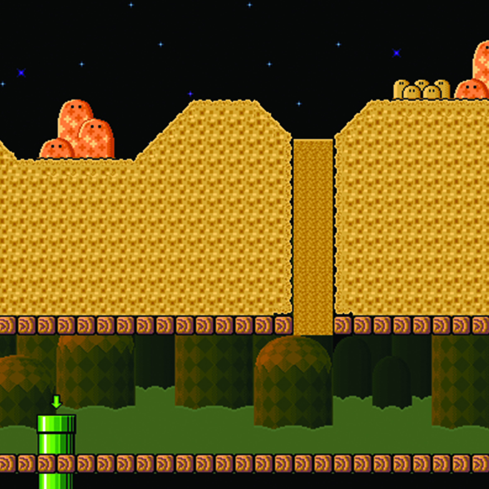
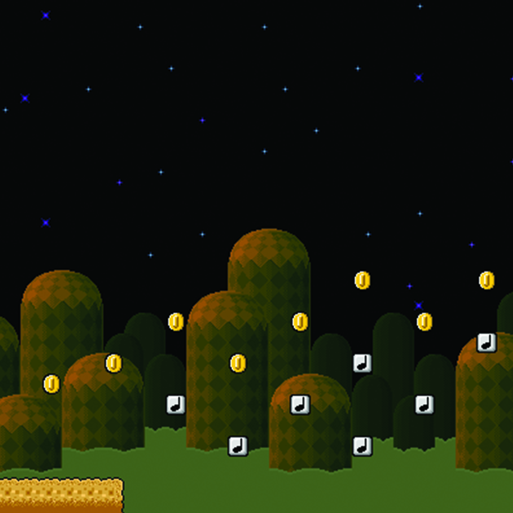
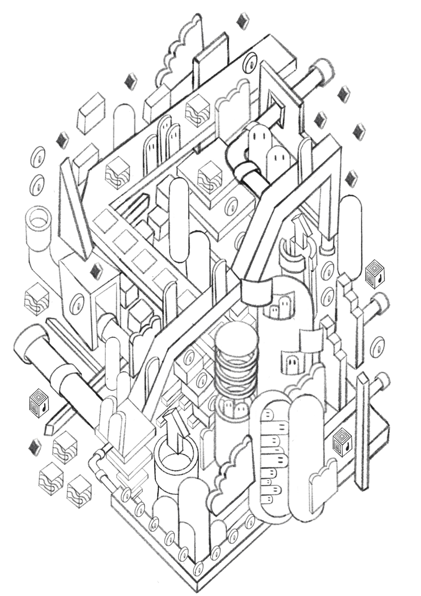
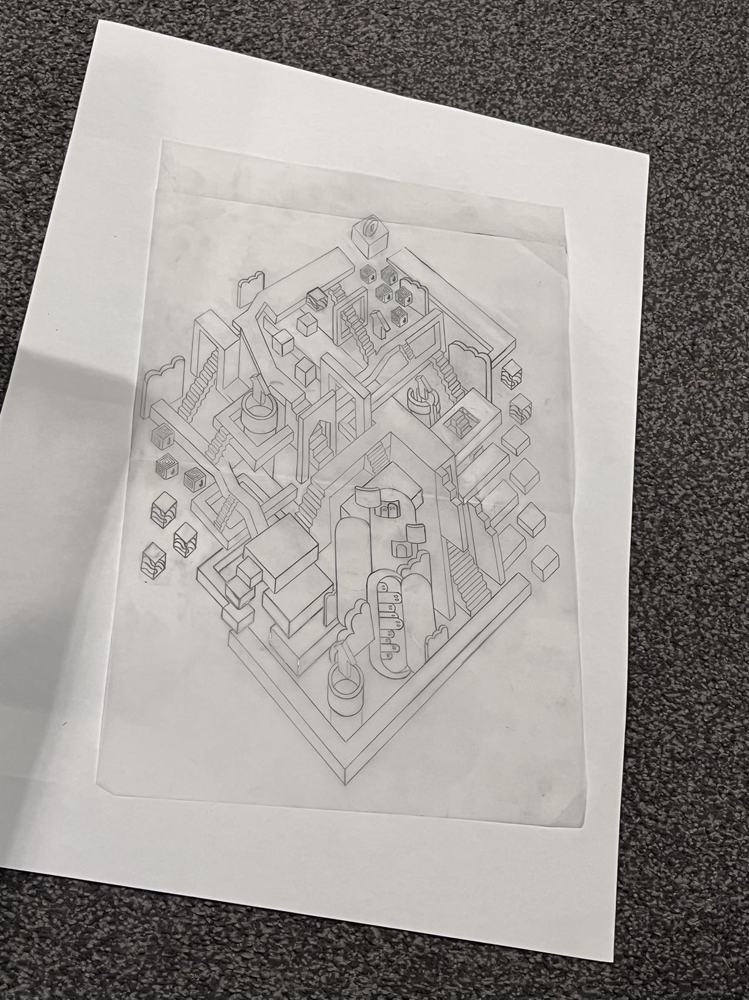
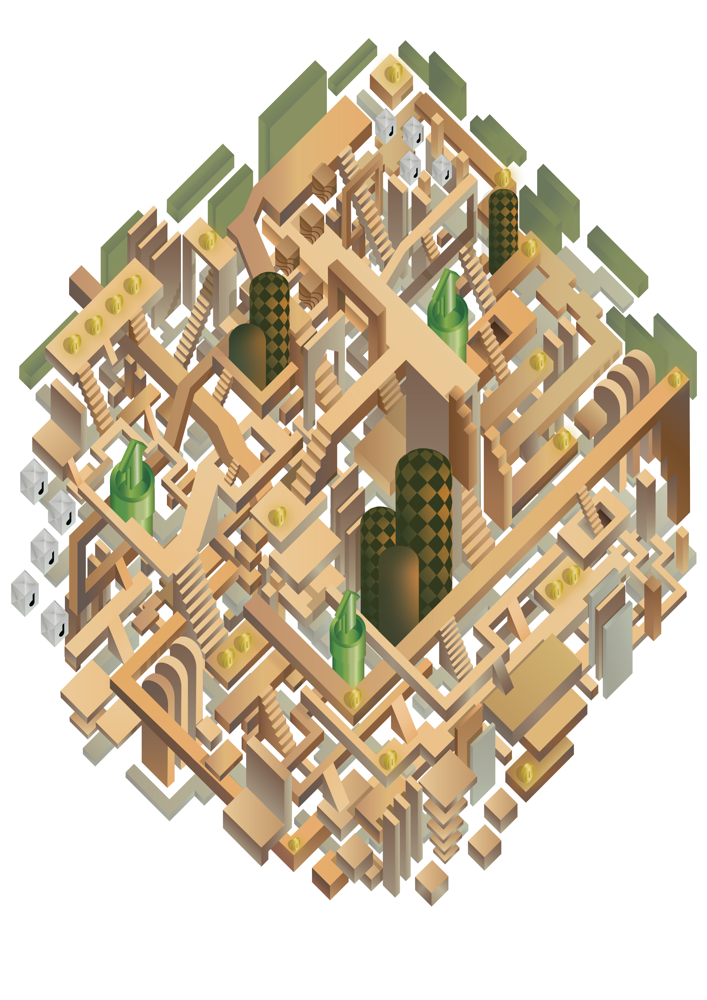

SPATIAL DESIGN · ARCH10001
Flatness vs. Projection — 从手绘轴测图到数字渲染
ARCH10001 Foundations of Design: Representation 课程项目。根据给定的原始图片进行空间再创造——将参考图像中的元素分解为不同形状的体块，以有序错落的方式排列，实现从平面到三维的空间转化。利用上升平台与连接楼梯形成连续平面，通过局部遮挡营造藤蔓交错般的层次感，色彩赋予空间主次关系与深度。





从手绘线稿出发，通过将大面积元素分解为不同形状的体块并有序错落排列，探索从平面到三维的空间转化。上升平台与连接楼梯构成连续平面，局部遮挡营造藤蔓交错般的层次感。色彩赋予画面主次关系，使空间层次更加分明。项目最终产出包括手绘轴测图与彩色数字轴测图。